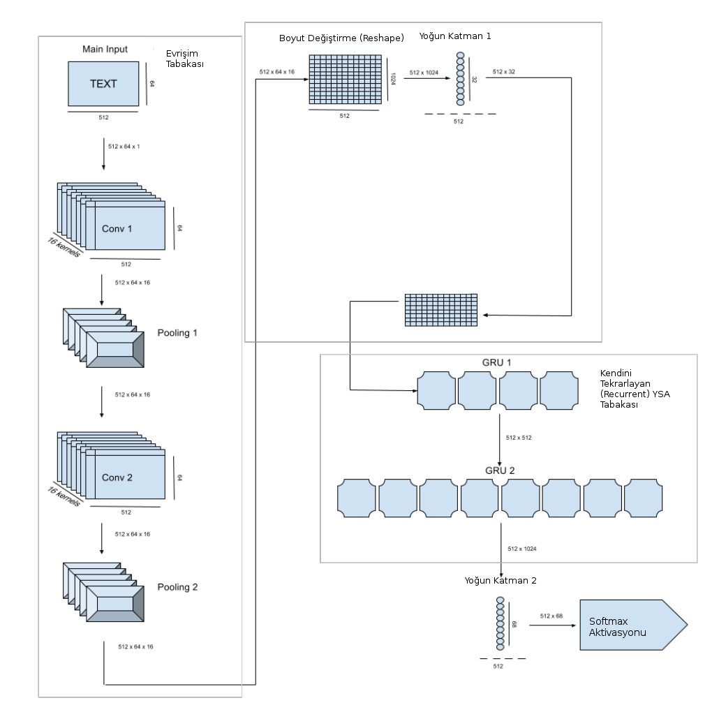

Optik Karakter Tanıma, Yazı Tanıma (Optical Character Recognition -OCR-)
OCR, iki dizini birbiriyle uyuşturma problemi olarak görülebilir. Dizi derken neden bahsetmek istediğimi anlatmaya uğrasayım. Çoğunlukla tanımak istediğimiz görüntü bir kelime, bir sayı dizisidir, ve bu dizi ufak ya da büyük bir kelime olabilir. Girdi ise boyutları önceden tanımlanan görüntüyü temsil eden veri parçaları olacaktır, bu görüntü bir kelimeye odaklanabilir, görüntü aktarılmadan önce o kelime bir kare içine alınmaya çalışır.
Kelime görüntüsünü bir evrişim tabakası üzerinden mesela işlenmiş veriler olarak parça parça, kesitler olarak alabiliriz. Ardından veri parçalarının zamansal ilintilerini yakalayabilmek için onları bir LSTM katmanına verebiliriz, ve her zaman adımındaki alfabe boyutundaki çıktılar, bir vektör olarak, her hücrede belli bir harfin olma olasılığı olarak ayarlanabilir. Eğer en son katmandan sonra uygun bir hata fonksiyonu tanımlayabilirsek bilinen etiketli kelimeler, onların görüntüsünü içeren eğitim verisi üzerinden tüm bu yapıyı eğitebiliriz.
Üstteki figürde İngilizce apple (elma) kelimesini görüyoruz. Girdi görüntü (input image) genişliği 128, yüksekliği 64 ve üç kanal var, bu kanallar her renk için R,G,B olabilir. İlk önce evrişimsel sinir ağı özellik çıkartma (CNN feature extraction) katmanı ile özellik bulmaya uğraşılıyor, buradan (4,8,4) boyutunda bir tensor elde ediliyor. Bu tensor (16,8) boyutuna getiriliyor, bu yeni tensor'daki her kolon (biri yeşille işaretli) önceki tensorda bir parçaya tekabül eder, yani kelime görüntüsünün bir parçasına.
Ardından şekillendirme (reshape) sonrası alınan yeni tensoru parça parça LSTM tabakasına veriyoruz, ilk LSTM hücresi mesela alttaki gibi,
LSTM sonrası tamamen bağlanmış (fully-connected) tabaka ve softmax ile alfabe tahmini üretiliyor. Bu örnekte alfabede 6 karakter var, bu sebeple vektör (6,1) boyutlu, karakterler 'a','e','l','p','z','-'. En son '-' karakteri "boş karakter'' demek, boş karakterin niye lazım olduğunu göreceğiz. Vektördeki ilk hücre $ya^1$ yani 'a', o noktada 'a' karakterinin olma olasılığı. Diğerleri o birinci hücre için aşağı doğru $ye^1$, $y_l^1$, vs. diye devam edecek. Şimdi tüm LSTM hücrelerini iceren resme bakalım,
Şimdi elimizde 8 tane 6 boyutlu softmax vektörü var.
Bu noktada iki sorumuz var: ilki YSA eğitimi bağlamında nasıl bir kayıp fonksiyonu bulalım ki uyan kelimeler için az, kötü uyanlar için yüksek rakam üretsin, ikincisi farklı boyutlardaki iki vektörün birbirine uyması ne demektir? Tüm bunlar tabii ki üstteki softmax vektörlerini nasıl dekode edip bir kelime üretiriz sorusu ile yakın alakalı.
Uyum konusu önemli çünkü el yazısı, ya da font seçimi dolasıyla bazı karakterler diğerlerinden daha fazla yer tutuyor olabilir. Aynı şey ses tanıma için de geçerli, "merhaba'' derken kimisi "meeeerhaba'' demiş olabilir, burada 'e' harfinden daha fazla ses verisi alınacaktır, ama o noktada üzerinde olunan harf değişmemiştir.
Dekode için akla gelebilecek ilk yaklaşım her vektör için en yüksek olasılıktaki hücreye tekabül eden karakteri seçmek (find the most probable symbol), sonra bir ek işlem tabakasına giderek bazı elemeler, düzeltmeler yaparak bir kelimeye erişmeye uğraşmak. Mesela en olasılı karakter seçimi sonrası arka arka gelen tekrar eden harfleri çıkartırız, sonra boş karakteri çıkartırız,
Tüm bunlar oldukca basit görünüyor. Fakat tüm bu işlemleri bir kayıp fonksiyonu olarak kullanmak istersek işler karışıyor. Çünkü kelime bulmaya uğraşırken softmax'lerde başlangıçtan sona pek çok farklı gidiş yolu var, tüm kombinasyonları işlemek zor.
Ayrıca üstteki kısaltma algoritması en iyi sonucu da her zaman vermeyebilir. Kombinasyon derken üstteki örnek için bile $6^8 = 1,679,616$ tane seçenekten bahsediyoruz. Daha büyük bir sözlük, ve daha fazla LSTM adımı için bu sayı astronomik boyutlara varabilir.
Çözüm nedir? Seçenekler arasından uygun yolu bulup hesaplayan, ya da verili bir etiket için olurluk (likelihood) hesabı yapan bir yaklaşım var, buna bağlantısal zamansal bedel (connectionist temporal cost) adı veriliyor, detaylar için [1,2,3]. CTC dinamik programlama kullanır, ayrıca yolu hesaplarken Gizli Markov Modellerine benzer $\alpha,\beta$ fonksiyonları yaratır, ve YSA öğrenimi bağlamında bu fonksiyonlar üzerinden gradyan hesabı mümkün oluyor, ve farklı boyuttaki girdi / çıktı arasındaki uyuşma, eğitim işte bu şekilde yapılıyor.
TensorFlow ile CTC
TF ile CTC hesabını görelim. Alttaki çıktının daha önce şemasını verdiğimiz YSA'ya benzer bir yapının son adımından çıkan softmax olasılıkları olduğunu düşünelim. Verinin satırları her LSTM adımı, her kolon alfabedeki farklı bir karakter.
train_inputs_0 = np.asarray(
[[0.633766, 0.221185, 0.0917319, 0.0129757, 0.0142857, 0.0260553],
[0.111121, 0.588392, 0.278779, 0.0055756, 0.00569609, 0.010436],
[0.0357786, 0.633813, 0.321418, 0.00249248, 0.00272882, 0.0037688],
[0.0663296, 0.643849, 0.280111, 0.00283995, 0.0035545, 0.00331533],
[0.458235, 0.396634, 0.123377, 0.00648837, 0.00903441, 0.00623107]],
dtype=np.float32)
Bu yapı üzerinde için mesela [0, 1, 2, 1, 0] dizisini kontrol
etmemiz istense dizinin kaybı / hatası nedir?
import tensorflow as tf
def sparse_tuple_from(sequences, dtype=np.int32):
indices = []
values = []
for n, seq in enumerate(sequences):
indices.extend(zip([n] * len(seq), range(len(seq))))
values.extend(seq)
indices = np.asarray(indices, dtype=np.int64)
values = np.asarray(values, dtype=dtype)
shape = np.asarray([len(sequences), np.asarray(indices).max(0)[1] + 1], dtype=np.int64)
return indices, values, shape
train_seq_len = [5]
num_features = 6
tf.reset_default_graph()
targets = tf.sparse_placeholder(tf.int32)
logits1 = tf.placeholder(tf.float32, [None, num_features] )
logits2 = tf.reshape(logits1, [1, -1, num_features])
logits3 = tf.transpose(logits2, (1, 0, 2))
seq_len = tf.placeholder(tf.int32, [None])
loss = tf.nn.ctc_loss(targets, logits3, seq_len)
decoded, log_prob = tf.nn.ctc_greedy_decoder(logits3, seq_len)
with tf.Session() as sess:
sess.run(tf.global_variables_initializer())
train_targets = sparse_tuple_from([[0, 1, 2, 1, 0]])
feed_t = { logits1: train_inputs_0,
targets: train_targets,
seq_len: train_seq_len }
res = sess.run(loss, feed_t)
print u'kayıp', res
kayıp [ 7.27719784]
Farklı veri, farklı çıktı,
train_inputs_1 = np.asarray(
[[0.30176, 0.28562, 0.0831517, 0.0862751, 0.0816851, 0.161508],
[0.24082, 0.397533, 0.0557226, 0.0546814, 0.0557528, 0.19549],
[0.230246, 0.450868, 0.0389607, 0.038309, 0.0391602, 0.202456],
[0.280884, 0.429522, 0.0326593, 0.0339046, 0.0326856, 0.190345],
[0.423286, 0.315517, 0.0338439, 0.0393744, 0.0339315, 0.154046]],
dtype=np.float32)
with tf.Session() as sess:
sess.run(tf.global_variables_initializer())
train_targets = sparse_tuple_from([[0, 1, 1, 0]])
feed_t = { logits1: train_inputs_1,
targets: train_targets,
seq_len: train_seq_len }
res = sess.run(loss, feed_t)
print u'kayıp', res
kayıp [ 8.08572388]
Şimdi ilginç bir veri, burada veri direk 2. karakter olsun diyor. O zaman buna uyan çıktılar alçak (kayıp az), uymayanlar yüksek sonuç vermeli,
train_inputs_2 = np.asarray(
[[0.0, 0.0, 1.0, 0.0, 0.0, 0.0],
[0.0, 0.0, 1.0, 0.0, 0.0, 0.0],
[0.0, 0.0, 1.0, 0.0, 0.0, 0.0],
[0.0, 0.0, 1.0, 0.0, 0.0, 0.0],
[0.0, 0.0, 1.0, 0.0, 0.0, 0.0]],
dtype=np.float32)
with tf.Session() as sess:
sess.run(tf.global_variables_initializer())
train_targets = sparse_tuple_from([[2, 2, 2]])
feed_t = { logits1: train_inputs_2,
targets: train_targets,
seq_len: train_seq_len }
res = sess.run(loss, feed_t)
print u'kayıp', res
train_targets = sparse_tuple_from([[0, 1, 1, 0]])
feed_t = { logits1: train_inputs_2,
targets: train_targets,
seq_len: train_seq_len }
res = sess.run(loss, feed_t)
print u'kayıp', res
kayıp [ 7.21795845]
kayıp [ 10.21795845]
Dekode
TF CTC ile dekode işlemi de yapılabilir,
with tf.Session() as sess:
sess.run(tf.global_variables_initializer())
feed_dec = { logits1: train_inputs_0, seq_len: train_seq_len }
decoded_res = sess.run(decoded, feed_dec)
print 'dekode', decoded_res
feed_dec = { logits1: train_inputs_1, seq_len: train_seq_len }
decoded_res = sess.run(decoded, feed_dec)
print 'dekode', decoded_res
feed_dec = { logits1: train_inputs_2, seq_len: train_seq_len }
decoded_res = sess.run(decoded, feed_dec)
print 'dekode', decoded_res
dekode [SparseTensorValue(indices=array([[0, 0],
[0, 1],
[0, 2]]), values=array([0, 1, 0]), dense_shape=array([1, 3]))]
dekode [SparseTensorValue(indices=array([[0, 0],
[0, 1],
[0, 2]]), values=array([0, 1, 0]), dense_shape=array([1, 3]))]
dekode [SparseTensorValue(indices=array([[0, 0]]), values=array([2]), dense_shape=array([1, 1]))]
En son örnekte values=array([2]) sonucu geldi, yani dekode işlemi
doğru bir şekilde tüm adımlar için tek bir seçim olan 2 seçimini yaptı. Bu
seçim arka arkaya tekrarlanmış olacaktı tabii ki bu sebeple bir kez
gösteriliyor, appleeee yerine apple demek gibi.
Ağ Yapısı ve Kod
Şimdi örnek veriyi, alfabeyi genişletelim ve ağ yapısını daha derinleştirelim. Altta gösterilen ağ yapısı [4] tezi ve onun esinlendiği [5] kütüphanesini baz alıyor. Nihai kodda teze göre bazı boyut değişiklikleri var, okur bunu akılda tutarak diyagramları, işlemleri takip edebilir. Mimaride ilk evrişim tabakasında arka arkaya iki evrişim ve max pool operasyonları var, sonra bir boyut değiştirme sonrası tamamen bağlanmış (fully connected) bir tabakaya sonuç geçiliyor, oradan çıkan sonuç iki yönlü (bi-directional) GRU tabakasına veriliyor. Bu zamansal YSA ilk başta görülen tek LSTM seviyesinden daha çetrefil yani. GRU hücreleri, LSTM hücre yapısının biraz daha basitleştirilmiş halidir. Devam edelim, buradan çıkan sonuçlar bir başka yoğun tabakaya oradan da softmax aktivasyonuna veriliyor, kayıp fonksiyonu CTC.

# -*- coding: utf-8 -*-
import os, util
import datetime
import numpy as np
from keras import backend as K
from keras.layers.convolutional import Conv2D, MaxPooling2D
from keras.layers import Input, Dense, Activation
from keras.layers import Reshape, Lambda
from keras.layers.merge import add, concatenate
from keras.models import Model
from keras.layers.recurrent import GRU
from keras.optimizers import SGD
from keras.utils.data_utils import get_file
from keras.preprocessing import image
import keras.callbacks
def ctc_lambda_func(args):
y_pred, labels, input_length, label_length = args
# the 2 is critical here since the first couple outputs of the RNN
# tend to be garbage:
y_pred = y_pred[:, 2:, :]
return K.ctc_batch_cost(labels, y_pred, input_length, label_length)
def get_model(img_w,img_h,minibatch_size,pool_size):
conv_filters = 20
kernel_size = (2, 2)
time_dense_size = 32
rnn_size = 256
input_shape = (img_w, img_h, 1)
img_gen = util.TextImageGenerator(minibatch_size=minibatch_size,
img_w=img_w,
img_h=img_h,
downsample_factor=(pool_size ** 2),
absolute_max_string_len=12
)
act = 'relu'
input_data = Input(name='the_input', shape=input_shape, dtype='float32')
inner = Conv2D(conv_filters, kernel_size, padding='same',
activation=act, kernel_initializer='he_normal',
name='conv1')(input_data)
inner = MaxPooling2D(pool_size=(pool_size, pool_size), name='max1')(inner)
inner = Conv2D(conv_filters, kernel_size, padding='same',
activation=act, kernel_initializer='he_normal',
name='conv2')(inner)
inner = MaxPooling2D(pool_size=(pool_size, pool_size), name='max2')(inner)
conv_to_rnn_dims = (img_w // (pool_size ** 2), (img_h // (pool_size ** 2))
* conv_filters)
inner = Reshape(target_shape=conv_to_rnn_dims, name='reshape')(inner)
inner = Dense(time_dense_size, activation=act, name='dense1')(inner)
gru_1 = GRU(rnn_size, return_sequences=True,
kernel_initializer='he_normal', name='gru1')(inner)
gru_1b = GRU(rnn_size, return_sequences=True,
go_backwards=True, kernel_initializer='he_normal',
name='gru1_b')(inner)
gru1_merged = add([gru_1, gru_1b])
gru_2 = GRU(rnn_size, return_sequences=True,
kernel_initializer='he_normal', name='gru2')(gru1_merged)
gru_2b = GRU(rnn_size, return_sequences=True,
go_backwards=True, kernel_initializer='he_normal',
name='gru2_b')(gru1_merged)
inner = Dense(img_gen.get_output_size(),
kernel_initializer='he_normal',
name='dense2')(concatenate([gru_2, gru_2b]))
y_pred = Activation('softmax', name='softmax')(inner)
Model(inputs=input_data, outputs=y_pred).summary()
labels = Input(name='the_labels',
shape=[img_gen.absolute_max_string_len],
dtype='float32')
input_length = Input(name='input_length', shape=[1], dtype='int64')
label_length = Input(name='label_length', shape=[1], dtype='int64')
loss_out = Lambda(ctc_lambda_func, output_shape=(1,), name='ctc')([y_pred,
labels,
input_length,
label_length])
sgd = SGD(lr=0.02, decay=1e-6, momentum=0.9, nesterov=True, clipnorm=5)
model = Model(inputs=[input_data,
labels,
input_length,
label_length], outputs=loss_out)
model.compile(loss={'ctc': lambda y_true, y_pred: y_pred}, optimizer=sgd)
test_func = K.function([input_data], [y_pred])
return model, test_func
if __name__ == '__main__':
pool_size = 3
img_w = 256
img_h = 64
minibatch_size = 10
img_gen = util.TextImageGenerator(minibatch_size=minibatch_size,
img_w=img_w,
img_h=img_h,
downsample_factor=(pool_size ** 2),
absolute_max_string_len=12
)
model, dummy = get_model(img_w,img_h,minibatch_size,pool_size)
mfile = "/tmp/ocr.h5"
if os.path.isfile(mfile):
print 'Loaded', mfile
model.load_weights(mfile)
model.fit_generator(generator=img_gen.next_train(),
steps_per_epoch=1000,
epochs=1,
validation_steps=0,
callbacks=[img_gen],
initial_epoch=0)
model.save(mfile)
Eğitim verisi ne olacak? Burada ilginç bir teknik kullanacağız, bir kelimenin imajını üretebilen yazılımlar var, yani masaüstünde Paint ya da Gimp ile bir imaj içine yazı yazmak gibi, bu kodlardan birini kullanıp, hatta üretilen imajı deforme bile ederek tanıma algoritmasının işini bilerek zorlaştırabiliriz, ve eğitime bu verileri sokarak, hiç ek eğitim verisi diskte tutmadan eğitim operasyonunu istediğimiz şekilde gerçekleştiririz. Bir örnek kelime imajı üretelim mesela,
import util
img_w = 256
img_h = 64
img_gen = util.TextImageGenerator(minibatch_size=1,
img_w=img_w,
img_h=img_h,
downsample_factor=4,
absolute_max_string_len=12)
for x in img_gen.next_train(): break
img = x[0]['the_input'].reshape(img_w,img_h).T
print x[0]['source_str'],
plt.imshow(img,cmap='gray',interpolation="none")
plt.savefig('ocr_06.png')
[u'daxco7mu1']
İmaj neye benziyor?

Eğitim verisini üreteç (generator) tekniği [6] üzerinden yaratıyoruz dikkat edildiyse, üreteç eğitim verisini bir gezici arayüzü üzerinden eğitim rutinine vermemizi sağlıyor. Üreteç, döngüsünde her dönüldüğünde ve çağıran veri istendiğinde rasgele bir kelime üretir, bu kelimeyi imaja çevirip etiketi ile birlikte çağrıyı yapana veriyor. Üreteç yapısını kullanmanın güzel tarafı çağıran tarafın döngü sözdizimini kullanabilmesi. Üstte tek bir kere dönüp çıktık (tek imaj istiyorduk), eğitim mekanizması istediği kadar dönerek istediği kadar eğtim verisi alabilir.
Görüldüğü gibi imaj biraz aşağı doğru eğimli çıktı, bu iyi, çünkü gerçek dünyada olan şartları tekrarlamak istiyoruz, belki bir cep telefonunun çektiği resimdeki kelimeleri tanıyacağız ve telefonu mükemmel şekilde tutmak mümkün değil, farklı açılardan kelimeleri tanıyabilmek çok iyi olur. Ayrıca kullandığımız rutin suni "gürültü'' bile ekliyor, karlandırma yapıyor mesela, hatta kelimenin imajın çok farklı yerlerinden başlatabiliyor.
Neyse, işte bu şekilde üretilen veri üzerinden eğitimi yapıp raporlanan kaybı belli bir seviyeye indirdikten sonra (5,6 civarı mesela, fakat uzun süre sonra 2 seviyesi de mümkün), YSA hazır demektir. Bizim önceden eğittiğimiz YSA'yı yükleyelim,
import train
mfile = '/tmp/ocr.h5'
pool_size = 3
img_w = 256
img_h = 64
minibatch_size = 1
model, test_func = train.get_model(img_w,img_h,minibatch_size,pool_size)
model.load_weights(mfile)
____________________________________________________________________________________________________
Layer (type) Output Shape Param # Connected to
====================================================================================================
the_input (InputLayer) (None, 256, 64, 1) 0
____________________________________________________________________________________________________
conv1 (Conv2D) (None, 256, 64, 20) 100 the_input[0][0]
____________________________________________________________________________________________________
max1 (MaxPooling2D) (None, 85, 21, 20) 0 conv1[0][0]
____________________________________________________________________________________________________
conv2 (Conv2D) (None, 85, 21, 20) 1620 max1[0][0]
____________________________________________________________________________________________________
max2 (MaxPooling2D) (None, 28, 7, 20) 0 conv2[0][0]
____________________________________________________________________________________________________
reshape (Reshape) (None, 28, 140) 0 max2[0][0]
____________________________________________________________________________________________________
dense1 (Dense) (None, 28, 32) 4512 reshape[0][0]
____________________________________________________________________________________________________
gru1 (GRU) (None, 28, 256) 221952 dense1[0][0]
____________________________________________________________________________________________________
gru1_b (GRU) (None, 28, 256) 221952 dense1[0][0]
____________________________________________________________________________________________________
add_1 (Add) (None, 28, 256) 0 gru1[0][0]
gru1_b[0][0]
____________________________________________________________________________________________________
gru2 (GRU) (None, 28, 256) 393984 add_1[0][0]
____________________________________________________________________________________________________
gru2_b (GRU) (None, 28, 256) 393984 add_1[0][0]
____________________________________________________________________________________________________
concatenate_1 (Concatenate) (None, 28, 512) 0 gru2[0][0]
gru2_b[0][0]
____________________________________________________________________________________________________
dense2 (Dense) (None, 28, 40) 20520 concatenate_1[0][0]
____________________________________________________________________________________________________
softmax (Activation) (None, 28, 40) 0 dense2[0][0]
====================================================================================================
Total params: 1,258,624
Trainable params: 1,258,624
Non-trainable params: 0
____________________________________________________________________________________________________
Şimdi üstteki örnek imajı tanımaya uğraşalım,
import itertools
def labels_to_text(labels):
ret = []
for c in labels:
if c == len(util.alphabet): # CTC Blank
ret.append("")
else:
ret.append(util.alphabet[c])
return "".join(ret)
def decode_batch(test_func, word_batch):
out = test_func([word_batch])[0]
ret = []
for j in range(out.shape[0]):
out_best = list(np.argmax(out[j, 2:], 1))
out_best = [k for k, g in itertools.groupby(out_best)]
outstr = labels_to_text(out_best)
ret.append(outstr)
return ret
pred_result = decode_batch(test_func, x[0]['the_input'])[0]
print pred_result
qaxco7mu4
Fena değil.
Gerekli kurulum
sudo apt-get install python-pip
sudo apt-get install build-essential
sudo apt-get install libffi-dev
sudo apt-get install libcairo
sudo apt-get install libcairo2
sudo pip install keras
sudo pip install tensorflow
sudo pip install pandas
sudo pip install cffi
sudo pip install cairocffi
sudo pip install editdistance
sudo pip install cairo
sudo pip install pygtk
sudo pip install cairocffi
sudo pip install h5py
Kaynaklar
[1] Graves, Supervised Sequence Labelling with Recurrent Neural Networks, https://www.cs.toronto.edu/~graves/preprint.pdf
[2] Graves, How to build a recognition system (Part 2): CTC Loss, https://docs.google.com/presentation/d/12gYcPft9_4cxk2AD6Z6ZlJNa3wvZCW1ms31nhq51vMk
[3] Graves, How to build a recognition system (Part 1): CTC Loss, https://docs.google.com/presentation/d/1AyLOecmW1k9cIbfexOT3dwoUU-Uu5UqlJZ0w3cxilkI
[4] Troller, Practical OCR system based on state of art neural networks, https://support.dce.felk.cvut.cz/mediawiki/images/2/24/Bp2017troller_milan.pdf
[5] Chollet, Keras, https://github.com/fchollet/keras/blob/master/examples/image_ocr.py
[6] Bayramlı, Fonksiyon Gezmek ve Yield, https://burakbayramli.github.io/dersblog/sk/2011/02/fonksiyon-gezmek-ve-yield.html
Yukarı